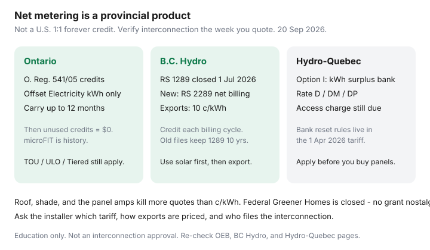

Utilities · Canada
Home solar and net metering in Canada: household basics before you get a quote
Solar sales decks still assume a U.S. 1:1 net-metering credit and a federal grant that Canadians cannot apply for. In this country the product is whatever your utility’s tariff says this month. Ontario banks dollar credits against the Electricity line. B.C. Hydro just moved new customers to a 10-cent export rate. Hydro-Québec banks kilowatt-hours. Those are different businesses.
This is household literacy before you take a roof measurement. Ontario bill math lives in the 2026 worth-it framework. Envelope work still precedes panels in upgrade order.
Key takeaways
- Net metering means you use your own kWh first and receive a defined credit for exports. The definition is provincial / utility — not a North American constant.
- Ontario (O. Reg. 541/05, OEB page used 20 Sep 2026): credits offset electricity consumption charges only, carry up to 12 months, then go to $0. You may stay on TOU, ULO, or Tiered.
- BC Hydro: RS 1289 closed to new customers 1 July 2026. New self-generation is RS 2289 net billing at 10¢/kWh per billing cycle. Existing 1289 customers keep that rate for 10 years from their start date.
- Hydro-Québec Option I: surplus kWh bank on Rate D/DM/DP; the daily access charge still appears. Enrol before you buy.
- Roof, shade, and the electrical panel kill more quotes than ¢/kWh. Federal Greener Homes is closed.
What net metering is — and how rules differ by province and utility
At household scale you are not a power company. You generate mostly for yourself. Surplus goes to the grid. The utility measures both directions. Then one of three things usually happens:
- True net metering (kWh or $ at retail). Exports offset later imports at a retail-like price, with a time limit.
- Net billing. Exports earn a posted ¢/kWh that may be lower than what you pay to buy power (B.C.’s new 10¢ is this shape).
- Load displacement / self-consumption. You try to use the kWh on site (sometimes with a battery). Some rebate streams are built around this and may not want a net-metering agreement.
FortisBC, municipal utilities, and co-ops have their own tariffs. Always start with your wires company, not a national blog.

BC Hydro self-generation updates vs Hydro-Québec net metering patterns
B.C. Hydro. The BCUC decision closed Rate Schedule 1289 to new customers. Effective 1 July 2026, new systems use Rate Schedule 2289. You consume your own generation first. Excess is purchased at 10 cents per kWh and credited each billing cycle — BC Hydro’s example is 50 kWh surplus → $5. You still sit on a residential energy rate (tiered or flat, optional time-of-day). Apply in MyHydro before installation. Customers who already took a BC Hydro solar rebate were moved to 2289; 1289 veterans keep the old rate for 10 years from their start date. Separate solar (up to $5,000 residential) and battery (up to $1,500) rebates exist with pre-approval and, as of 1 June 2026, HPCN installer rules — read the live rebate page.
Hydro-Québec. Net Metering Option I is for Rate D, DM, or DP customer-generators using renewable supply at the same delivery point, capacity no greater than the lesser of 1,000 kW or estimated demand. Surplus earns kWh credits in a surplus bank. You still pay the system access charge (Rate D daily charge from 1 Apr 2026 is 46.154¢ in our Rate D guide). The 1 April 2026 tariff describes bank reset / residual payment rules — read the current Option I page and tariff PDF before you size a system that would dump a year’s surplus. Apply in writing; the option starts after the right meter is in.
Ontario: microFIT history vs modern net metering
microFIT paid a contracted feed-in tariff for small renewable projects. That era is over for new household shopping. Today the Ministry / OEB product is net metering under O. Reg. 541/05. You generate primarily for your own use, sign a net-metering agreement, and pass the LDC’s technical interconnection. Credits apply to electricity consumption charges only. Per section 8(8), unused credits reduce to $0 after 12 months. OEB staff have been clear since 2023: the utility cannot force you onto Tiered as a condition of net metering — TOU and ULO remain available, and an export in an on-peak hour is worth the on-peak price.
Retailer solar PPAs and associated equipment agreements are a different contract stack. The OEB does not set those prices. Door-to-door PPA sign-up is not allowed. You get a disclosure statement and a 10-day cooling-off on the PPA. Read the Ontario companion before you sign a 20-year roof lease.
Roof, shading, and electrical panel constraints
- Roof life. A 25-year array on 8-year-old shingles means you pay to pull the system later. Do the roof first if it is close.
- Shade. One chimney or a neighbour’s new storey can wreck a string. Ask for a shade report, not a south-facing shrug.
- Snow and tilt. Production estimates should use a Canadian weather file, not Phoenix.
- Panel / service. A 100 A service with a heat pump, dryer, and future EV may not have room for a large inverter without an upgrade. That is a real line item.
- Condo / HOA. The board can say no. Get it in writing before a deposit.
Simple payback framing without grant nostalgia
Payback ≈ (installed cost − live rebates) ÷ (annual bill reduction you can defend). The denominator is not “retail ¢ × every kWh the array could make.” It is avoided imports plus whatever export credit your tariff actually posts, minus the delivery you still pay, minus clipping from shade and snow. Do not subtract a Greener Homes Grant. Do not use a U.S. 30% federal credit.
Installer marketing ranges we saw in September 2026 often cluster around $2.40–$3.50 per watt installed in competitive Ontario markets, higher in thinner markets. Treat that as a shopping band. Get two written quotes on the same kW DC.
Questions every installer quote must answer
- Which tariff will I be on the day after permission to operate — name and rate schedule number?
- How is an exported kWh priced (TOU period, 10¢, kWh bank)? Which bill lines does it not touch?
- Who files the interconnection and how long does the LDC take?
- What is the inverter warranty versus the panel warranty? Who climbs the roof if a microinverter dies in year nine?
- Does a rebate path (HRSP, BC Hydro solar rebate, LogisVert solar) restrict net metering or require load displacement? Ask in writing.
- What happens if I sell the house?
Date-stamp: verify utility interconnection rules at draft
We used the OEB net-metering page, BC Hydro self-generation / RS 2289 materials, and Hydro-Québec Option I / 1 Apr 2026 tariff on 20 September 2026. Tariffs move. Reload those pages the week you sign. If the salesperson cannot name the rate schedule, they are selling panels, not a bill outcome.
Sources & date stamps
- OEB, Net metering — credits vs consumption charges; 12-month expiry (s. 8(8)); PPA consumer notes (used 20 Sep 2026).
- BC Hydro, Customer generation / self-generation rate updates — RS 1289 closed 1 Jul 2026; RS 2289 at 10¢/kWh.
- Hydro-Québec, Net Metering Option I and Electricity Tariffs effective 1 Apr 2026.
- NRCan home energy-efficiency — no live federal rooftop grant for new Greener Homes applicants.
Frequently asked questions
Is net metering the same in every province?
No. Ontario credits offset the Electricity kWh line for up to 12 months. BC Hydro closed old net metering (RS 1289) to new customers on 1 July 2026 and pays 10¢/kWh exports on RS 2289. Hydro-Québec banks kWh under Option I.
Do solar credits wipe the whole hydro bill?
Usually not. Ontario credits cannot be applied to delivery, regulatory charges, or tax. Québec’s access charge still appears. Always ask which lines the credit touches.
Is microFIT still a thing in Ontario?
microFIT was a feed-in-tariff for small generators and is not the modern household path. New rooftop conversations are net metering (O. Reg. 541/05) or a load-displacement / rebate path — confirm with your LDC.
Should I use a U.S. solar payback spreadsheet?
No. U.S. net-metering and the federal residential credit do not apply. Canadian federal Greener Homes is closed. Start from your utility’s interconnection page.
What must a quote answer in writing?
Tariff name, how exports are priced, who files interconnection, roof penetrations and remaining shingle life, inverter warranty, panel ampacity, and whether a rebate path bars net metering.